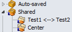

Sitzungen gemeinsam nutzen


|
Sitzungen gemeinsam nutzen |
|
|
Mehrere Anwender können Sitzungen gemeinsam nutzen, indem sie eine gemeinsame Sitzungendatei verwenden. Um eine gemeinsame Sitzungen-Datei zu erstellen
Um auf eine gemeinsame Sitzungendatei zuzugreifen
Gemeinsam genutzte Sitzungen (Shared sessions) werden dann als neuer Zweig in der Baumstruktur der Sitzungen erscheinen: 
Beachten Sie, dass gemeinsam genutzte Sitzungen schreibgeschützt sind und nicht innerhalb von Beyond Compare bearbeitet werden können. Um Änderungen an gemeinsam genutzten Sitzungen vorzunehmen, müssen Sie die Paketdatei wie oben beschrieben erneut erstellen. |